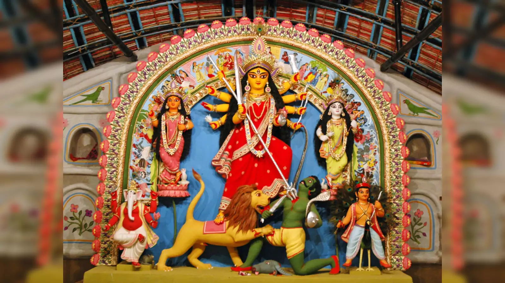
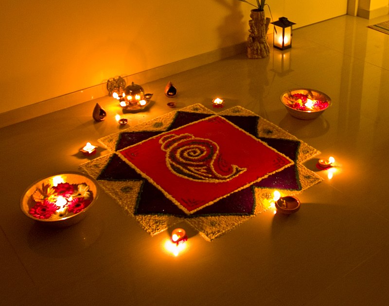
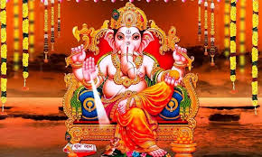

Notable Festivals
Madhya Pradesh is celebrated for its diverse and vibrant festivals, reflecting its rich cultural heritage. Here are some of the most prominent festivals celebrated in the state.

Navratri:
Navratri is a significant festival celebrated with much fervor in Madhya Pradesh. It spans nine nights and involves fasting, dance, and worship of the goddess Durga.

Diwali:
Diwali, the Festival of Lights, is widely celebrated across Madhya Pradesh. Homes are decorated with lamps and candles, and festive feasts are enjoyed.
Holi:
Holi, the Festival of Colors, is a joyous celebration where people come together to play with colors, dance, and enjoy traditional sweets.
